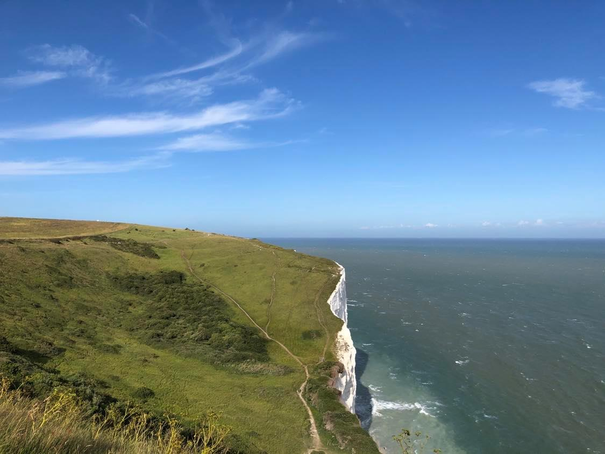
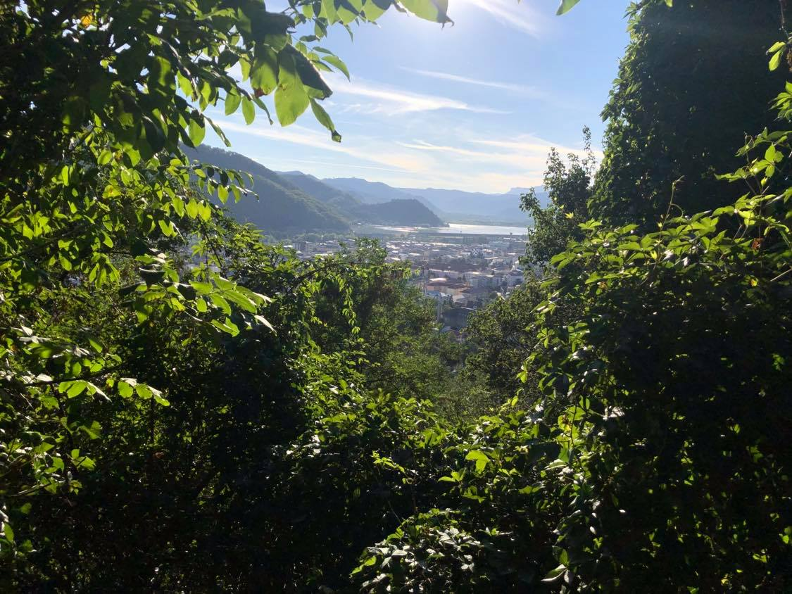

If we look at a landscape, our eyes travel over it and selectively focus on the elements that we find appealing. Our field of vision encompasses a great deal of the scene, but our eyes and brains have the ability to ignore all details except the most alluring ones. Finding the right moment for taking a photo can make a landscape picture an absolute joy to look at.

